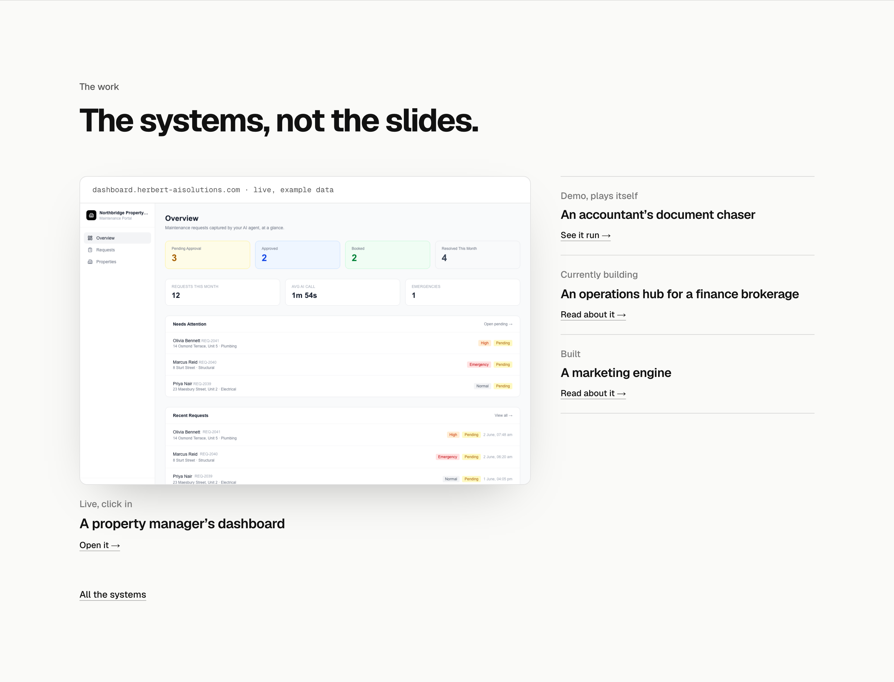
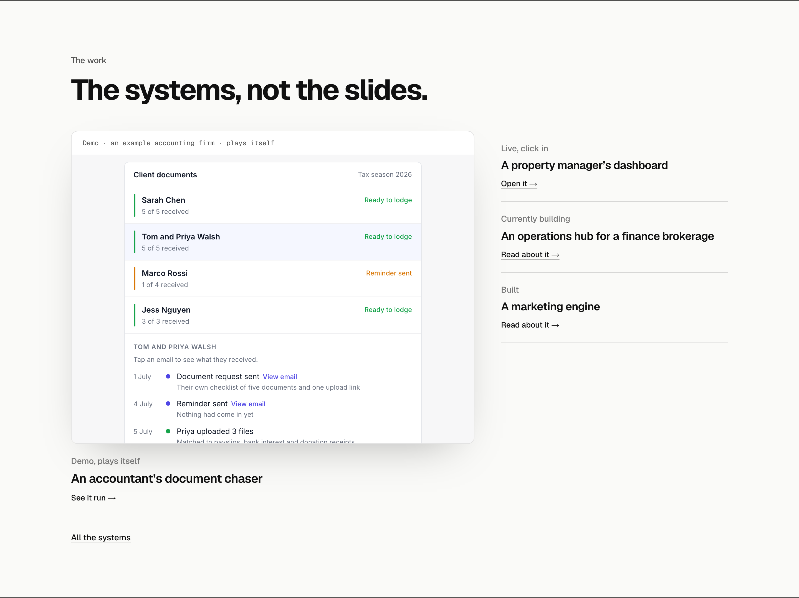
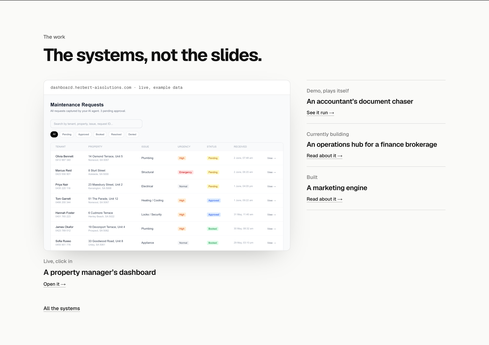
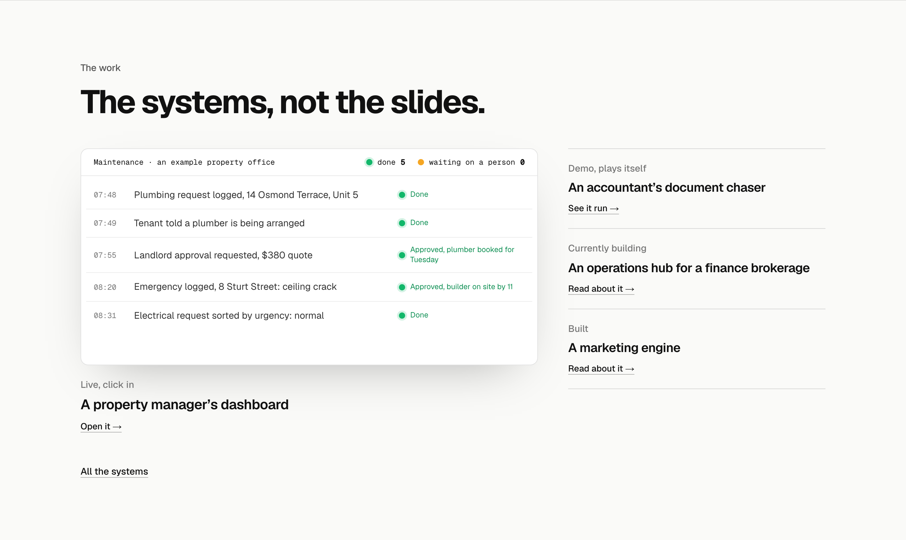

The work: option C, the large visual
Option C as you picked it, one system large and the rest listed beside it, with three different large visuals. Shown whole at 1440 in their finished state, with the tighter spacing from How it works. 1 and 3 move; they run at /lab/the-work-visual.
C as drawnThe old dashboard screenshot. For comparison, not an option.

1. The accountant demo, playingThe demo itself in a frame, running its tax season right there in the section: checklists going out, reminders, files marked ready. It is on this site, so nothing about it can go stale or show a warning, and it is the one thing on the page that moves the way the hero does. Clicking opens the full demo. The dashboard moves into the list. Recommended.

2. The dashboard, cleaned upThe property dashboard’s requests table as a still, minus the developer warning it shows today. The real software, but its own colours (yellow, blue, green and red tags) sit oddly on this site, and its requests are dated late May, so the warning and the dates need fixing in the dashboard before it ships.

3. The property office as a boardThe property office’s morning drawn in the site’s own board style, matching the hero: requests logged, a landlord approval waiting, then approved. Clicking opens the real dashboard. Consistent, but it is a drawing of the software, not the software.
